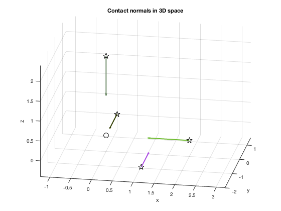
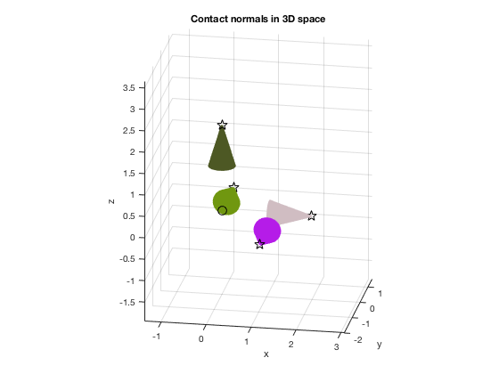

Contents
% 16-741 Mechanics of Manipulation, Fall 2017 % Author: Sung Kyun Kim (kimsk@cs.cmu.edu) % % Execution script to test your code for Part 1 % Change the value of TEST to run different test sets % % TEST: an index for test cases (0: an example in reference [1] and [2], 1~2: test cases for grading); scalar % % Examples: % part1(); % part1(1); function part1(TEST)
% check input arguments if nargin ~= 1 TEST = 0; end
Given contact normals and parameters
switch (TEST) % index for test sets case 0 % example in reference [1] and [2]; not for grading % contact point position p1 = [2; 0; 0]; p2 = [0; 1.5; 0]; p3 = [0; 0; 2]; p4 = [1.2; -2; 0]; CP = [p1 p2 p3 p4]; % inward-pointing contact normal direction n1 = [-1; 0; 0]; n2 = [0; -1; 0]; n3 = [0; 0; -1]; n4 = [0; 1; 0]; CN = [n1 n2 n3 n4]; % friction coefficient (try both of values) mu = 0.3; % mu = 0.5; % the number of side facets of a linearized polyhedral friction cone M = 100; case 1 % test case 1 for grading % contact point position p1 = [1; 1; 1]; p2 = [-1; 1; 0]; p3 = [0; -2; -1]; CP = [p1 p2 p3]; % inward-pointing contact normal direction n1 = [-1; -1; -1]; n2 = [1; -1; 0]; n3 = [0; 2; 1]; CN = [n1 n2 n3]; % friction coefficient mu = 0.5; % the number of side facets of a linearized polyhedral friction cone M = 100; case 2 % test case 2 for grading % contact point p1 = [-0.81; 1.26; 1.23]; p2 = [-1.75; -1.37; 0.74]; p3 = [1.49; 0.85; -1.39]; p4 = [0.49; -2.57; -0.39]; p5 = [1.23; -1.04; 1.20]; CP = [p1 p2 p3 p4 p5]; % relative rotation matrix (first column in R, i.e., x-axis of local frame, is the pushing direction) n1 = [0; -1; 0]; n2 = [1; 0; 0]; n3 = [0; -1; 0]; n4 = [0; 1; 0]; n5 = [0; 0; -1]; CN = [n1 n2 n3 n4 n5]; % friction coefficient mu = 0.2; % the number of side facets of a linearized polyhedral friction cone M = 100; end
Q1/Q2 Frictionless point contact
% normalized screw coordinates of contact normals [W] = contactScrew(CP, CN); % draw contact screws figure; drawContactScrew(CP, W); % force closure test (1: true, 0: false) [bFC, zmax] = isForceClosure(W);
rank < 6
Q3 Frictional point contact
% friction cone approximation [CPF, CNF] = frictionCone(CP, CN, mu, M); % normalized screw coordinates of contact normals [WF] = contactScrew(CPF, CNF); % draw contact screw figure; drawContactScrew(CPF, WF, M); % force closure test (1: true, 0: false) [bFCF, zmaxF] = isForceClosure(WF); % print out results bFC zmax bFCF zmaxF
Optimization terminated.
bFC =
0
zmax =
0
bFCF =
1
zmaxF =
-1.4809
